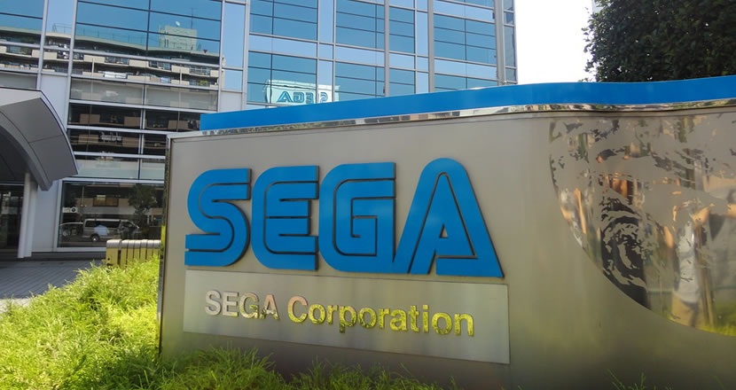
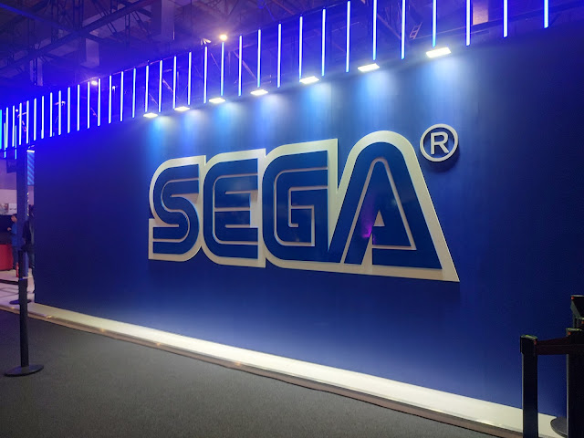
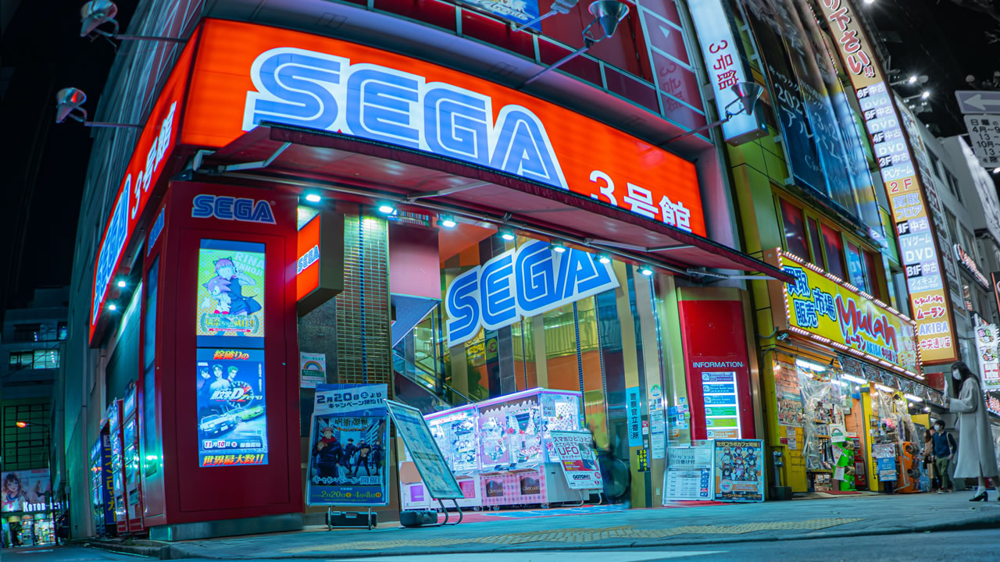
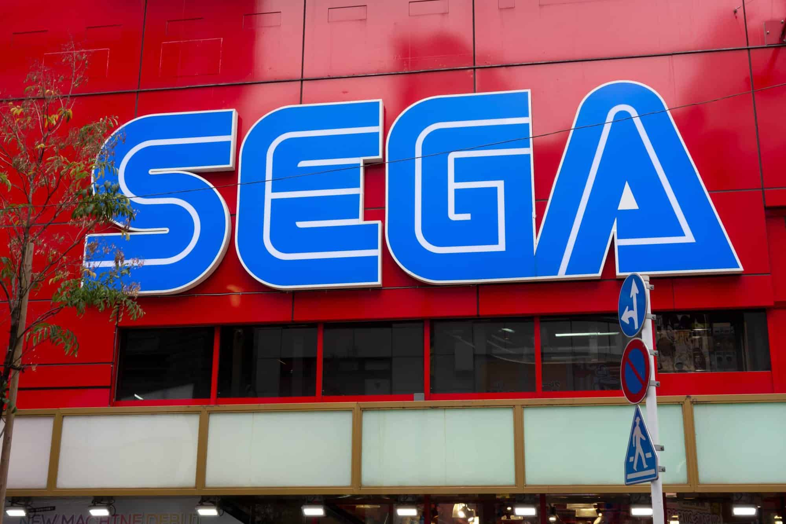
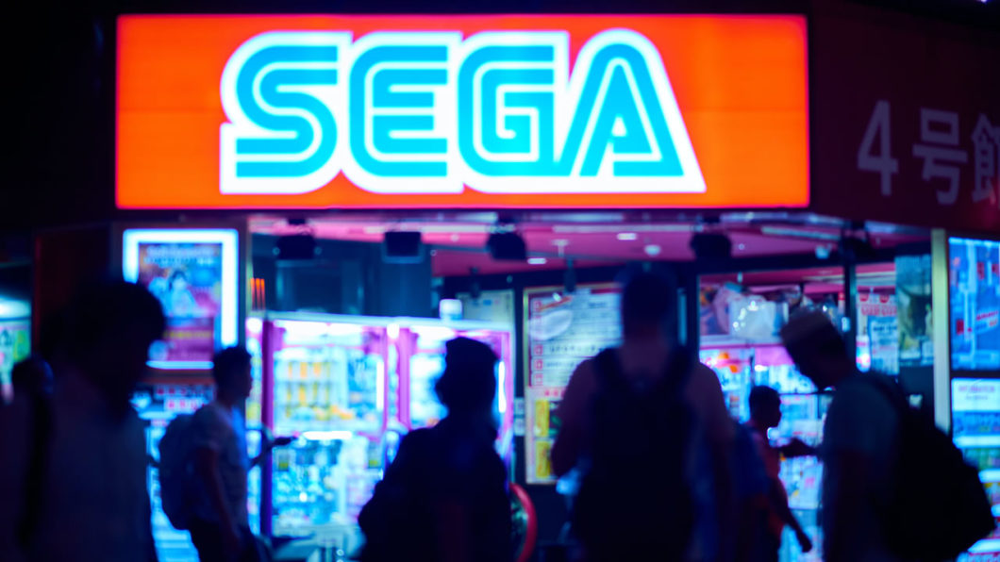

Sobre
A SEGA é mais do que uma empresa de jogos - é um símbolo de ousadia e inovação que redefiniu os limites da indústria. Fundada em 1940 como "Standard Games" no Havaí, a empresa começou sua vida fornecendo máquinas de flipper e jogos mecânicos para bases militares, evoluindo para a "SEGA Enterprises" em 1965, nome derivado de SErvice GAmes. Esta origem no entretenimento físico e no ágil mercado arcade forjou o DNA da empresa: experiências intensas, imediatas e focadas no jogador. Sua jornada é marcada por decisões ousadas que desafiaram o status quo. O Master System, com sua paleta de cores superior, desafiou a hegemonia do NES. O Mega Drive/Genesis, com o slogan "Genesis does what Nintendon't", não era apenas um console; era uma declaração de guerra cultural, trazendo velocidade, atitude e um mascote que personificava esses valores: Sonic the Hedgehog. Sonic não era um encanador; era uma força da natureza, rebelde e cool, encapsulando perfeitamente o espírito de desafio da SEGA. A ousadia continuou com o Saturn, que ousou explorar a terceira dimensão com uma arquitetura complexa, e culminou no Dreamcast. Este foi um visionário à frente de seu tempo: primeiro console com modem integrado, que permitia jogos online e navegação na web; seus controles com tela (VMU) eram um conceito revolucionário. Apesar de seu curto ciclo de vida, o Dreamcast estabeleceu os pilares da conectividade online e de serviços como a DreamArena, um vislumbre de um futuro que só se concretizaria uma geração depois. A SEGA nunca seguiu a multidão. Enquanto outros buscavam um realismo técnico, ela apostou em personalidade. Esta filosofia se refletia em seus estúdios internos, como a AM2 de Yu Suzuki, responsável por marcos do arcade como Out Run, Space Harrier, After Burner e a lendária série Virtua Fighter – que praticamente criou o gênero de luta 3D. Era uma empresa que celebrava a jogabilidade frenética, as trilhas sonoras memoráveis e uma identidade visual audaciosa e inconfundível. Seu legado não está apenas nos consoles que fabricou, mas na cultura que criou. Dos fliperamas que eram templos de socialização juvenil aos jogos que definiram gerações, a SEGA moldou o imaginário coletivo. Mesmo após a dolorosa decisão de deixar o mercado de hardware em 2001, a SEGA não desapareceu; ela realizou uma das transições mais bem-sucedidas na indústria. Transformou-se em uma desenvolvedora e publicadora de peso, mantendo vivo seu espírito inovador, mas agora através de experiências profundas e narrativas. Franquias como Yakuza (Like a Dragon), com sua narrativa madura e um mundo aberto transbordando de personalidade, Persona (através da Atlus), que redefine os RPGs com seu estilo e profundidade psicológica, e a estratégia épica de Total War, mostram que o DNA da SEGA evoluiu para abraçar novas complexidades. E, é claro, Sonic continua sua jornada, um ícone eterno que conecta o passado glorioso ao presente. Hoje, a SEGA é uma prova viva de que a verdadeira inovação não está apenas no silício ou na potência do hardware, mas na coragem de criar experiências memoráveis, seja com a velocidade de um ouriço azul, a dramática vida de um gangster em Tóquio ou a grandiosidade de uma batalha histórica. É um legado que transcende gerações, tecnologias e continua a inspirar jogadores em todas as plataformas.
Fotos da empresa





Yuji Naka
Conhecido como o "pai do Sonic", Yuji Naka é uma das mentes mais visionárias da história dos videogames. Nascido em 1965 no Japão, Naka ingressou na SEGA em 1984 e rapidamente se tornou um dos programadores mais talentosos da empresa. Sua contribuição mais marcante veio em 1991, quando, em parceria com Naoto Ohshima e Hirokazu Yasuhara, criou Sonic the Hedgehog - um personagem que não apenas salvou a SEGA da concorrência acirrada da Nintendo, mas definiu uma era de jogos de plataforma. O que tornava Sonic único era sua velocidade alucinante, algo que Naka acreditava ser essencial para diferenciar a SEGA dos concorrentes. Sua filosofia de design focava em criar jogos que transmitissem a sensação de velocidade e liberdade, revolucionando o gênero de plataforma. Naka não parou por aí: ele foi fundamental no desenvolvimento do Phantasy Star IV, Sonic 2 e Sonic 3, além de ser o principal programador do Sonic Mania. Após deixar a SEGA em 2006, fundou a Prope, continuando a inovar com jogos como Let's Create! e Balan Wonderworld. Sua contribuição para a indústria vai além de jogos - ele ajudou a moldar a própria identidade da SEGA, provando que a criatividade e a ousadia podem transformar um personagem em um ícone global.